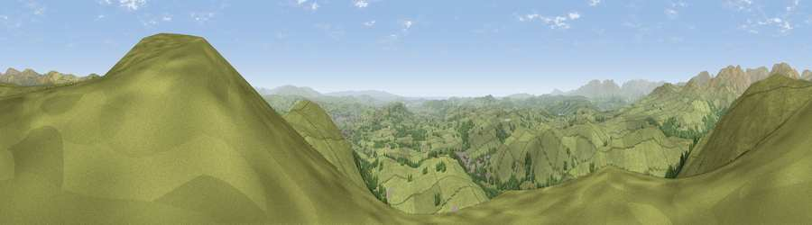

Viewpoint near Staveley
#3544 in England · top 16% of its area beats it · near StaveleyThe view, rendered

A 360° render of this exact spot computed from the terrain model, tree cover and land cover — summer colours, afternoon light, calibrated against photographs of famous viewpoints. Real trees, hedges and buildings will differ in detail.
The panorama
Grey silhouette: terrain skyline in each direction (720 bearings, Earth curvature and refraction included). Dashed green: skyline with trees (+15 m) and buildings (+8 m) as obstacles. Blue strip: how far the ground is visible on each bearing.
Where the view opens
Wedge length = distance to the farthest visible ground on that bearing (vegetation-aware). Rings at 10, 25 and 50 km.
What fills the view
91% grassland · 8% woodland ·
Angular shares of the visible panorama (visual magnitude), not map area. Landscape diversity 0.14 (0–1 Shannon).
Key numbers
More beautiful places nearby
The staircase of upgrades: each row has a higher view potential than everything closer. Driving times are estimates from straight-line distance, calibrated against real road routing — check an actual route before setting out.
| Place | Direction | Drive | Score |
|---|---|---|---|
| Viewpoint near Staveley | ENE · 0 km | ~1 min | 75.1 |
| Viewpoint near Sadgill | NE · 4 km | ~9 min | 77.3 |
| Viewpoint near Garnett Bridge | NE · 5 km | ~12 min | 77.6 |
| Sallows | NW · 6 km | ~12 min | 78.0 |
| Sour Howes | WNW · 6 km | ~13 min | 78.4 |
| Viewpoint near Kentmere | NW · 7 km | ~15 min | 79.5 |
| Ill Bell | NNW · 9 km | ~17 min | 80.9 |
| High Street (summit) | NNW · 11 km | ~21 min | 82.6 |
54.39754, -2.79974 · source: screening · position refined by local search. Computed location — check access rights before visiting.